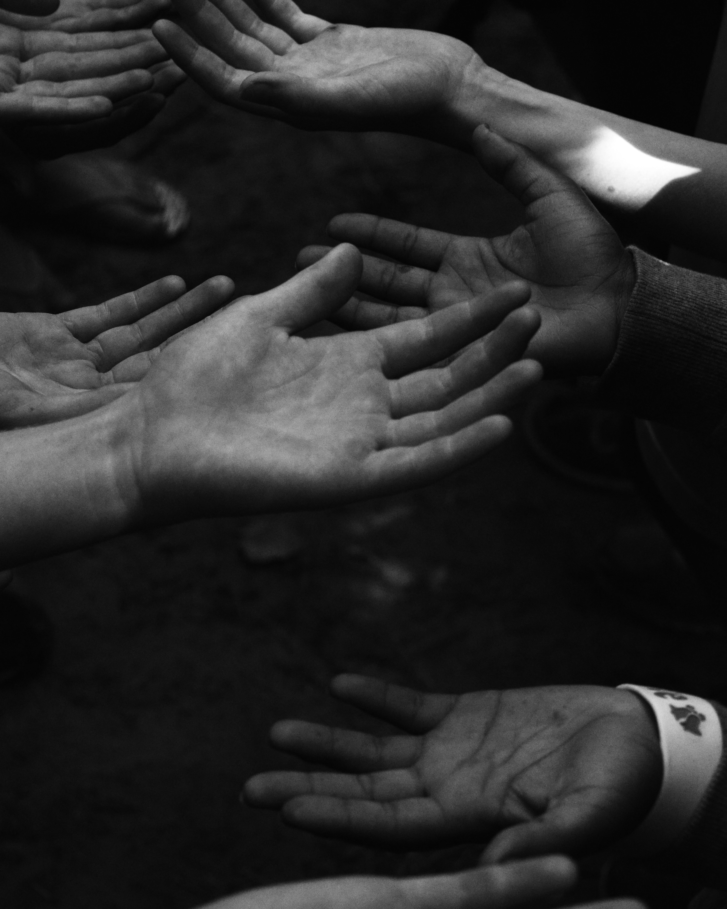

- Who moved my cheese
- Sapiens
- 90년생이 온다
- 토론
Sapiens

editing...
서문/ 역사연대표
- 나는 이 책이 독자 스스로 ‘우리는 누구인가, 어디에서 왔는가, 어떻게 해서 이처럼 막대한 힘을 얻게 되었는가’를 이해하는 데 도움이 되기를 소망한다. (Pp.8)
- 나는 이 책이 성공한 이유를 진정한 필요에 답을 주기 때문이라고 믿는다. (Pp.9)
- 말하자면 인간은 권력을 획득하는 데는 매우 능하지만 권력을 행복으로 전환하는 데는 그리 능하지 못하다는 것이다. (Pp.10)
- 기술은 이야기의 절반에 불과하고, 마침내 사람들이 기술로 무엇을 할 것인지에 따라 모든 것이 결정된다는 사실이다. (Pp.10)
- 5천년전-최초의 왕국. 글씨와 돈 사용. 다신교 종교.
- 현재-생명체의 형태가 자연선택보다 지적설계에 의해 결정되는 경향이 커짐. (Pp.15)
1. 별로 중요치 않은 동물
- 이들 세 혁명은 인간과 그 이웃 생명체에게 어떤 영향을 끼쳤을까? 그것이 이 책의 주제다. (Pp.19)
- 불과 6백만 년 존 단 한 마리의 암컷 유인원이 딸 둘을 낳았다. 이 중 한 마리는 모든 침팬지의 조상이, 다른 한 마리는 우리 종의 할머니가 되었다. (Pp.22)
- 몇만 년 전의 지구에는 적어도 여섯 종의 인간이 살고 있었다. 여기에서 이상한 점은 옛날에 여러 종이 살았다는 사실이 아니라 오히려 지금 딱 한 종만 있다는 사실이다. (Pp.26)
- 인간을 키우려면 부족이 필요했고 따라서 진화에서 선호된 것은 강한 사회적 결속을 이룰 능력이 있은 존재였다. 게다가 인간은 미숙한 상태로 태어나기 때문에 교육을 받고 사회화할 수 있는 기간이 다른 어떤 동물보다 길다. (Pp.29)
- 관용은 사피엔스의 특징이 아니다. 현대의 경우를 보아도 사피엔스 집단은 피부색이나 언어, 종교의 작은 차이만으로도 곧잘 다른 집단을 몰살하지 않는가. (pp.39)
- 그래서 찰스 다윈이 호모 사피엔스는 동물의 한 종류에 불과하다고 암시하자 사람들은 격분했다. 심지어 오늘날에도 받아들이지 않는 사람이 많다. 만이 네안데르탈인이 살아남았다면, 그래도 우리는 스스로를 다른 종과 동떨어진 존재라고 인식할까? 어쩌면 우리 조상들이 네안데르탈인을 전멸시킨 이유가 바로 이것인지 모른다. 그들이 우리가 무시하기에는 너무 친숙하고 관용하기에는 너무 달랐다는 것. (pp.40)
2. 지식의 나무
- 인간의 언어가 진화한 것은 소문을 이야기하고 수다를 떨기 위해서라는 것이다. 이 이론에 따르면, 호모 사피엔스는 무엇보다 사회적 동물이다. 사회적 협력은 우리의 생존과 번식에 핵심적 역할을 한다. (pp.47)
3. 아담과 이브가 보낸 어느 날
✏️우리는 이전의 어떤 세대와 비교하더라도 물적 자원이 풍부해지고 수명도 길어졌지만, 이 환경은 또한 우리로 하여금 소외되고 우울하고 압박받는다고 느끼게 만들었다. 진화심리학자들은 그 이유를 알려면 우리를 형성했던 수렵채집 세계를 깊이 파고들어야 한다고, 우리는 무의식적으로는 아직도 그 속에 살고 있다고 주장한다. (pp71)
4. 대홍수
✏️최초의 수렵채집인이 호주 해안에 발을 들이니 순간은 호모 사피엔스가 특정 대륙에서 먹이사슬의 최상층부로 올라가고 이후 지구라는 행성의 연대기에서 가장 치명적인 종이 된 순간이었다. (pp.104)
✏️예컨대 약 45,000년 전의 소위 ‘기후변화’에 조금의 타격도 입지 않았던 뉴질랜드의 대형동물군은 인류가 그 곳에 발을 들이자마자 치명적인 피해를 입었다. 뉴질랜드의 첫 사피엔스 정착자인 마오리족이 그 섬에 도달한 것은 약 8백 년 전이었다. 그로부터 2백 년도 채 지나지 않아 그곳의 대형동물 대부분이 멸종했고 모든 조류 종의 60퍼센트도 멸종했다. (pp.107)
✏️우리는 생물학의 연대기에서 단연코 가장 치명적인 종이라는 불명예를 갖고 있다. 만일 좀 더 많은 사람이 멸종의 제1의 물결과 제2의 물결에 대해 안다면, 스스로가 책임이 있는 제 3의 물결에 대해서 덜 초연한 태도를 보일 것이다. 만일 우리가 이미 얼마나 많은 종을 절멸시켰는지를 안다면, 아직 살아남은 종들을 보호하려는 의욕이 좀 더 생길 것이다. (pp.117)
5. 역사상 최대의 사기
✏️평균적인 농부는 평균적인 수렵채집인보다 더 열심히 일했으며 그 대가로 더 열악한 식사를 했다. 농업혁명은 역사상 최대의 사기였다. (pp.124)
✏️사피엔스의 신체는 이런 과업에 맞게 진화하지 않았다. 사과나무에 기어오르고 가젤을 뛰어서 뒤쫓는 데 적응했지, 바위를 제거하고 물이 든 양동이를 운반하는 데 적합한 몸이 아니었다. 인간의 척추와 무릎, 목과 발바닥의 장심이 대가를 치렀다. (pp.126)
✏️농업혁명의 핵심이 이것이다. 더욱 많은 사람들을 더욱 열악한 환경에서 살아 있게 만드는 능력. 하지만 이런 진화적 계산법에 왜 개인이 신경을 써야 하는가? 제정신인 사람이라면 호모 사피엔스 DNA 복사본의 개수를 늘리기 위해 삶의 질을 포기할 사람이 있겠는가? 그런 거래에 동의한 사람은 아무도 없었다. 농업혁명은 덫이었다. (pp.129)
✏️역설적이게도 일련의 ‘개선’이 합쳐져서 농부들의 어깨에 더 무거운 짐으로 얹혔다. 각각의 개선은 삶을 좀 더 나은 것으로 만들기 위한 것이었는데 말이다. 사람들은 왜 이렇게 치명적인 계산 오류를 범했을까? 역사를 통틀어 사람들이 오류를 범하는 이유와 동일한 이유에서였다. 사람들은 자신의 결정이 가져올 결과를 전체적으로 파악하는 능력을 갖고 있지 않았다. (pp.133)
✏️좀 더 쉬운 삶을 추구한 결과 더 어렵게 되어버린 셈이었고, 이것이 마지막도 아니었다. 오늘날 우리에게도 똑같은 일이 벌어지고 있다. 대학을 졸업한 젊은이 중 상당수는 돈을 많이 벌어 35세에 은퇴해서 진짜 자신이 원하는 것을 하겠다고 다짐하면서 유수 회사들에 들어가 힘들게 일한다. 하지만 막상 그 나이가 되면 거액의 주택 융자, 학교에 다니는 자녀, 적어도 두 대의 차가 있어야 하는 교외의 집, 정말 좋은 와인과 멋진 해외 휴가가 없다면 삶은 살 만한 가치가 없다는 느낌을 갖게 된다. 이들이 뭘 어떻게 할까? 뿌리 채소나 캐는 삶으로 돌아갈까? 이들은 노력을 배가해서 노예 같은 노동을 계속한다. (pp.135)
✏️지난 몇십 년간 우리는 시간을 절약하는 기계를 무수히 발명했다. 우리는 시간을 절약한다고 생각했지만, 실은 인생이 돌아가는 속도를 과거보다 열 배 빠르게 만들었다. 그래서 우리의 일상에는 불안과 걱정이 넘쳐난다. (pp.136)
✏️반면 오늘날 세계에는 10억 마리의 양, 10억 마리의 돼지, 10먹 마리 이상의 소, 250억 마리 이상의 닭이 존재한다. 그리고 이들은 도처에 퍼져 있다. 가축화된 닭은 역사상 가장 널리 퍼진 가금류다. (pp.142)
✏️진화적 성공과 개체의 고통 간의 이런 괴리는 우리가 농업혁명에서 얻을 수 있는 가장 중요한 교훈일 것이다. 우리가 밀이나 옥수수 같은 식물의 이야기를 조사할 때는 순수한 진화적 관점이 타당할 지 모른다. 하지만 소나 양, 사피엔스처럼 각자 복잡한 기분과 감정을 지닌 동물의 경우, 진화적 성공이란 것이 개체의 경험에 어떤 식으로 작용하는지를 고려할 필요가 있다. 앞으로도 우리는 우리 종이 집단적으로 힘을 키우고 외견상 성공을 구가한 것이 개개인의 큰 고통과 나란히 진행되었다는 사실을 거듭 확인하게 될 것이다. (pp.147)
6. 피라미드 건설하기
✏️고대 수렵채집인들은 수십, 수백 제곱 킬로미터에 이르는 영토에서 사는 것이 보통이었다. 그들에게 ‘본거지’란 언덕과 시내, 숲과 열린 하늘을 포함하는 땅 전체를 말했다. 하지만 농부는 종일 작은 밭이나 과수원에서 일했고, 가정생활은 나무나 돌, 진흙으로 지어져 면적이 몇십 제곱미터에 불과한 비좁은 구조물, 즉 집에서 이뤄졌다. 전형적인 농부는 이 구조물에 매우 강한 애착을 느꼈다. 이것은 건축학뿐 아니라 심리에도 큰 영향을 미칠 커다란 혁명이었다. 이리하여 ‘내 집’에 대한 집착과 이웃으로부터의 분리는 이전보다 훨씬 더 자기중심적이 된 존재의 심리적 특징이 되었다. (pp.149)
✏️농업혁명 덕에 미래는 어느 때보다 중요해졌다. 농부들은 언제나 미래를 의식하고 그에 맞춰서 일해야 했다. 풍성한 수확을 모두 끝마친 날 밤 농부들은 마음껏 축하를 할 수 있었지만, 그로부터 한두 주일 이내에 다시 새벽에 일어나 들판에서 온종일 일하는 일상으로 돌아갔다. 식량은 오늘, 다음 주, 다음 달 먹을 것까지 충분했지만 이들은 다음 해와 그다음 해 먹을거리까지 걱정해야 했다. (pp.151)
농업의 도래와 함께 비로소 인간의 마음속 극장에서 미래에 대한 걱정은 주연배우가 되었다. (pp.152)
농부들이 미래를 걱정한 것은 단순히 걱정할 이유가 더 많았을 뿐 아니라 미래에 대해 뭔가 할 수 있는 일이 있었기 때문이다. (pp.152)
✏️근대 후기에 이르기까지 인류의 90퍼센트는 아침마다 일어나 구슬 같은 땀을 흘리며 땅을 가는 농부였다. 그들의 잉여 생산이 소수의 엘리트를 먹여 살렸다. 왕, 정부 관료, 병사, 사제, 예술가, 사색가… 역사책에 기록된 것은 이들 엘리트의 이야기다. 역사란 다른 모든 사람이 땅을 갈고 물을 운반하는 동안 극소수의 사람이 해온 무엇이다. (pp.153)
✏️우리는 사람을 ‘귀족’과 ‘평민’으로 구분하는 것이 상상의 산물이라는 말을 쉽게 받아들일 수 있다. 하지만 모든 사람이 평등하다는 사상 또한 신화다. 어떤 의미에서 모든 인간이 서로 평등하다는 것인가? 인간의 상상력을 벗어난 어딘가에 우리가 진정으로 평등한 객관적으로 실재하는 세계에 있단 말인가? 모든 인간은 생물학적으로 평등한가? (pp.163)
✏️진화는 평등이 아니라 차이에 기반을 둔다. 모든 사람은 얼마간 차이 나는 유전부호를 가지고 있으며, 날 때부터 각기 다른 환경의 영향에 노출된다. 그래서 각기 다른 특질을 발달시키게 되며, 그에 따라 생존 가능성에 차이가 난다.
사람은 창조되지 않았을 뿐 아니라 사람에게 무언가를 ‘부여’하는 ‘창조주’같은 것도 없다. 존재하는 것은 오직 맹목적인 진화과정뿐이며, 개인은 어떤 목적도 없는 그 과정에서 탄생한다. (pp.164)
✏️생물학 연구에서는 지금껏 행복을 명확히 정의하거나 객관적으로 측정하는 방법을 찾지 못했다. 대부분의 생물학 연구는 쾌락이 존재한다는 것만을 인정한다. (pp.165)
✏️우리가 특정한 질서를 신뢰하는 것은 그것이 객관적으로 진리이기 때문이 아니라, 그것을 믿으면 더 효과적으로 협력하고 더 나은 사회를 만들어낼 수 있기 때문이다. 상상의 질서란 사악한 음모도 무의미한 환상도 아니다. 그보다는 아주 많은 사람들이 효과적으로 협력할 수 있는 유일한 방법이다. (pp.166)
✏️토머스 제퍼슨 역시 인권에 대해 같은 말을 했을 것이다. 호모 사피엔스에게는 하늘이 부여한 권리가 없다. 거미나 하이에나나 침팬지에게 그런 권리가 없듯이. 하지만 이런 이야기를 하인에게 하지는 마라. 그가 밤에 우리를 죽일지 모르니까. (pp.167)
✏️인간의 모든 집단행동 중에서 가장 조직하기 어려운 것 중 하나가 폭력이다. 어떤 사회의 질서가 군사력에 의해 지탱된다고 말하는 순간, “군대의 질서는 무엇이 유지하는가?”하는 의문이 당장 떠오른다. 오로지 강요에 의해서만 군대를 조직하는 것은 불가능하다. 최소한 일부 지휘관과 병사는 신이든 명예든 조국이든 남성다움이든 돈이든 뭔가를 진심으로 신봉해야만 한다. (pp.168)
✏️사람들이 가장 개인적 욕망이라고 여기는 것들조차 상상의 질서에 의해 프로그램된 것이다. 예컨대 해외에서 휴가를 보내고 싶다는 흔한 욕망을 보자. 이런 욕망은 전혀 자연스럽지도, 당연하지도 않다. 오늘날 사람들이 휴가에 많은 돈을 쓰는 이유는 그들이 낭만주의적 소비지상주의를 진정으로 신봉하기 때문이다. (pp.173)
✏️낭만주의는 우리에게 인간으로서 잠재력을 최대한 활용하려면 최대한 다양한 경험을 해야 한다고 속삭인다. 다양한 감정의 스펙트럼을 향해 스스로를 활짝 열어야 하고, 다양한 관계들을 두루 맛보아야 하며, 평소와 다른 요리를 시식해봐야 하고, 다른 종류의 음악을 감상하는 법을 배우라고 말이다. (pp.173)
✏️고대 이집트의 엘리트처럼, 대부분의 문화에 속하는 대부분의 사람들은 나름대로의 피라미드 건설에 삶을 바쳤다. 문화에 따라 피라미드 이름과 형태와 크기가 달라질 뿐이다. 피라미드는 수영장과 늘 푸른 잔디밭이 딸린 교외의 작은 집일 수도 있고, 전망이 끝내주는 고급 맨션 꼭대기층일 수도 있다. 애초에 우리로 하여금 그 피라미드를 욕망하도록 만든 신화 자체를 의심하는 사람은 드물다. (pp.175)
✏️달러화, 인권, 미국은 이와 유사한 방식으로 수십억 명이 공유하는 상상 속에 존재한다. 한 개인은 누구라도 그 존재를 위협할 수 없다. 이런 상상의 질서는 상호 주관적이며, 이를 변화시키려면 수십억 명의 의식을 동시에 변화시켜야 한다. 상상의 질서를 빠져나갈 방법은 없다. 우리가 감옥 벽을 부수고 자유를 향해 달려간다 해도, 실상은 더 큰 감옥의 더 넓은 운동장을 향해 달려나가는 것일 뿐이다. (pp.177)
7. 메모리 과부하
문자체계가 인간의 역사에 가한 가장 중요한 충격은 정확히 이것, 즉 인간이 세계를 생각하는 방식과 세계를 보는 방식이 점차 바뀌었다는 점이었다. 자유 연상과 전체론적 사고는 칸막이와 관료제에 자리를 내주었다. (pp.193)
물리학이나 공학의 경우 해당 지식 분야 전체가 인간의 말과의 접촉을 거의 잃어버리고 오로지 수학적 문자 체계에 의해서만 유지되고 있다.
쓰기는 인간의 의식을 돕는 하인으로 탄생했지만, 점점 더 우리의 주인이 되어가고 있다. 컴퓨터는 호모 사피엔스가 어떻게 말하고 느끼고 꿈꾸는지를 이해하는 데 어려움을 겪는다. 그래서 우리는 호모 사피엔스에게 컴퓨터가 이해할 수 있는 숫자 언어로 말하고 느끼고 꿈꾸라고 가르치고 있다. (pp.195)
8. 역사에 정의는 없다.
학자들이 알기로 대규모 사회치고 차별을 모두 없앤 곳은 이제까지 없었다. 사람들은 자기 사회의 구성원들을 가상의 범주에 따라 분류하여 사회에 질서를 창조하는 일을 되풀이했다.
위계질서는 중요한 기능을 하나 수행한다. 완전히 모르는 사람들끼리 개인적으로 아는 사이가 되느라 시간과 에너지를 낭비하지 않고도 서로를 어떻게 대해야 하는지 알 수 있게 해준다는 점이다. (pp.200)
사회적 차별이 형성되는 데는 타고난 능력의 차이도 한몫 하지만, 능력과 성격의 다양성은 보통 상상의 질서의 영향을 받기 마련이다. 첫째이자 가장 중요한 점은, 대부분의 재능에는 육성과 개발이 필요하다는 것이다. 누군가가 재능을 타고났더라도 그것을 키우고 갈고 닦고 훈련할 환경이 되지 않으면 재능은 잠드는 것이 일반적이다. 모든 사람이 능력을 배양하고 가다듬을 기회를 동등하게 누리는 것은 아니다. 그런 기회를 갖느냐 갖지 못하느냐는 그가 자신이 속한 사회의 상상의 위계질서에서 차지하는 위치에 달려 있다. (pp.201)
다른 계층에 속한 사람들이 정확히 같은 능력을 개발했더라도 이들이 똑같이 성공할 가능성은 적다. 게임에 적용되는 규칙이 각기 차이가 날 것이기 때문이다. 영국 지배하의 인도에서 불가촉천민과 브라만이, 혹은 아일랜드 태생의 가톨릭 신자와 영국 신교도가 어떻게 해서든 똑 같은 상업적 통찰력을 개발했다고 하자. 그렇더라도 이들이 부자가 될 확률은 각기 다를 수밖에 없다. 경제라는 게임은 법적인 제약과 비공식적인 유리천장으로 조작되게 마련이다. (pp.202)
노예가 해방된 다음에도, 노예제를 정당화했던 인종차별적 신화는 계속 유지되었다. 인종분리는 인종차별적 입법과 사회적 관습에 의해 지속되었고, 그 결과 원인과 결과가 서로를 강화하는 악순환이 되풀이되었다. (pp.207)
학자들은 흑인이 실제로 교육 수준이 낮으며 다양한 질병에 걸리는 일이 많고 범죄율이 훨씬 더 높다는 사실을 ‘증명’했다. 이런 연구가 간과한 점은 이런 ‘사실’들이 흑인에 대한 차별의 결과라는 점이었다.
20세기 중반에 과거 남부연합에 속했던 주들에서 자행되었던 인종차별은 19세기 말보다 더욱 심했을 것으로 추정된다. 1985년 미시시피 대학교에 지원한 흑인 학생 클레넌 킹은 정신병원에 강제 수용되었는데, 판사가 미시시피 대학교에 들어갈 수 있다고 생각한 흑인은 제정신이 아니라고 판결했기 떄문이었다. (pp.210)
시간이 흐르면서 인종차별은 점점 더 많은 문화영역으로 퍼졌다. 미국의 미학 문화는 미에 대한 백인의 기준을 중심으로 세워졌다. 백인종의 신체 특징인 흰 피부와 금발 직모, 약간의 들창코가 아름다운 것으로 인식되었고, 흑인의 전형적인 모습인 검은 피부, 검고 텁수룩한 머리, 납작한 코는 추한 것으로 취급되었다. 이런 선입견은 인간의 의식에서 훨씬 더 깊은 수준에 있는 상상의 위계질서를 각인시켰다. (pp.211)
악순환은 수세기 수천 년 지속되면서 역사적으로 우연히 발생한 질서에 불과한 상상의 위계질서를 지속시킬 수 있다. 부당한 차별은 시간이 흐르면서 개선되는 것이 아니라 더욱 심해질 수 있다. 돈은 돈 있는 자에게 들어오고, 가난은 가난뱅이를 방문하는 법이다. 교육은 교육받은 자에게, 무지는 무지한 자에게 돌아가게 마련이다. 역사에서 한번 희생자가 된 이들은 또다시 희생자가 될 가능성이 크다. 역사의 특권을 누린 계층은 또다시 특권을 누릴 가능성이 크다.
대자연은 남자끼리 서로 성적으로 끌리는 것에 전혀 개의치 않는다. 아들이 옆집 소년과 성관계를 맺고 있다고 해서 소동을 일으키는 것은 오로지 특정 문화에 깊이 물든 인간 엄마뿐이다. 사실 엄마의 분노도 생물학적 필연은 아니다. 적잖은 인간 문화들이 동성애가 합법적일 뿐 아니라 사회적으로 건설적이라고 보았고, 그 가장 두드러진 사례가 바로 고대 그리스였다. ‘일리아스’에는 아킬레스가 파트로클로스와 동성애 관계를 맺는 데 대해 엄마인 테티스가 반대했다는 언급이 전혀 없다. (pp.215)
생물학은 매우 폭넓은 가능성을 기꺼이 받아들인다. 사람들에게 어떤 가능성을 실현하도록 강제하고 다른 가능성을 금지하는 장본인은 바로 문화다. 생물학은 여성들에게 아이를 낳는 능력을 주었고, 일분 문화는 여성들에게 그 가능성을 실현하는 것을 의무로 지웠다. 생물학은 남자들끼리 성관계를 즐길 수 있게 했고, 일부 문화는 그런 가능성을 실현하는 것을 금지했다.
문화는 자신이 오로지 부자연스러운 것만 금지한다고 주장하는 경향이 있지만, 생물학적 관점에서 보자면 사실 부자연스러운 것이란 없다. 가능한 것이라면 그게 무엇이든 처음부터 자연스러운 것이다. 정말로 부자연스러운 행동, 자연법칙에 위배되는 행동은 아예 존재 자체가 불가능하므로 금지할 필요가 없다. 수고롭게시리 남자에게 광합성을 금지하거나, 여자에게 빛보다 빨리 달리지 못하게 하거나, 음전하를 띈 전자가 서로에게 끌리지 못하도록 금지한 문화는 하나도 없었다.
진화에는 목적이 없다. 장기는 어떤 목적을 가지고 진화한 것이 아니며, 그 사용방식은 끊임없이 변화한다. 가령 입이 등장한 것은 가장 초기의 다세포 생명체가 영양소를 몸 안으로 섭취할 필요가 있었기 때문이고, 우리는 지금도 그런 용도로 입을 사용하지만, 동시에 키스하고 말하는 데도 사용한다. 람보라면 수류탄 뽑을 때도 써먹는다. 이런 용도 중 어느 하나라도 부자연스러운 것이 있을까? 벌레 비슷하게 생겼던 6억 년 전의 우리 선조가 입으로 하지 않던 일이라는 이유만으로? (pp.217)
다음번에 모기가 당신 귀 근처에서 앵앵거린다면 모기에게 그것은 부자연스러운 행위라고 비난해보라. 만일 그 모기가 하느님이 자신에게 준 것에 만족하는 착한 모기라면 날개는 태양광 집열기로만 쓸 테니까.
여성의 자연스러운 기능은 애를 낳는 것이라는 주장, 동성애는 부자연스럽다는 주장에는 그다지 타당성이 없다. 남성성과 여성성을 규정하는 법과 규범, 권리와 의무는 대부분 생물학적 실체보다 인간의 상상력을 더 많이 반영하고 있기 때문이다. (pp.218)
‘남자가 여자보다 강하다’는 진술은 평균적으로만, 그리고 특정한 종류의 힘에 대해서만 옳다. 일반적으로 여자는 굶주림, 질병, 피로에 대한 저항력이 남자보다 크다. 또한 많은 남자보다 더 빨리 달리고 더 무거운 것을 들 수 있는 여자도 많다. 게다가 이 이론의 가장 큰 문제는 역사를 통틀어 여자는 육체적 노력이 거의 필요 없는 직업에서 대체로 배제되어 왔으면서도 들일이나 수공예, 가사노동처럼 힘든 육체노동에 종사했다는 점이다. 만일 사회적 권력의 분할에 육체적 힘이나 지구력이 직접 관련되었다면 여자는 실제보다 훨씬 더 많은 것을 얻었을 것이다. (pp.225)
만일 적나라한 신체적 능력만 중요했다면, 사피엔스는 먹이 사다리의 중간쯤에 존재했을 것이다. 우리가 최상위 자리를 차지할 수 있었던 것은 정신적, 사회적 기량 덕분이다. 따라서 우리 종 내의 권력 사다리도 폭력이 아니라 정신적, 사회적 능력에 따라 결정되는 것이 자연스럽다. 그러므로 남자가 신체적 힘으로 여자를 강제할 수 있다는 사실이 역사상 가장 영향력 있고 안정적인 사회적 위계질서의 토대라고 믿기는 어렵다. (pp.226)
흔한 고정관념에 따르면 여자는 남자보다 남을 조종하고 유화책을 쓰는 능력이 우월하다고 한다. 다른 사람의 시각에서 사물을 보는 능력도 뛰어나다고 한다. 이런 고정관념에 진실이 조금이라도 포함되어 있다면, 여자들은 뛰어난 정치가나 제국 건설자가 되었어야 한다. 전장에서의 더러운 일은 테스토스테론이 가득 찬 단순한 마초들에게 맡기고 말이다. 대중적인 신화에도 불구하고, 현실에서는 이런 일이 거의 벌어지지 않았다. 왜 그런지는 확실하지 않다. (pp.229)
사피엔스는 상대적으로 힘이 약한 동물이고, 그 장점은 대규모로 협력하는 능력에 있다. 만일 그렇다면, 여자들이 비록 남자에게 의존한다 할지라도 협력이라는 우월한 사회적 기술을 이용해 공격적이고 자율적이며 자기중심적인 남자들의 허를 찌르고 조종하리라고 예상할 수 있다. 무엇보다도 협력 덕분에 성공한 종에서 협력성이 더 떨어진다는 개체(남자)들이 협력성이 더 뛰어나다는 개체(여자)들을 통제하는 일이 어떻게 벌어진 걸까? (pp.231)
9. 역사의 화살
모든 문화는 나름의 전형적인 신념, 규범, 가치를 가지고 있지만, 이것들은 끊임없이 변화한다. 환경의 변화나 이웃 문화와의 접촉에 반응해 스스로 모습을 끊임없이 바꾼다. 스스로의 내부적 역동성으로 인해 변이를 겪기도 한다. 안정된 생태계에서 완전히 고립되어 존재하는 문화조차 변화를 피할 수 없다. (pp.235)
프랑스 혁명 이해 세계 모든 곳의 사람들은 점차 평등과 개인의 자유를 근본적 가치라고 생각하게 되었다. 하지만 두 가치는 서로 모순된다. 평등을 보장하는 방법은 형편이 더 나은 사람의 자유를 제한하는 것 이외에 없다. 모든 개인이 자신이 원하는 바를 할 수 있도록 보장하려면 필연적으로 평등에 금이 간다. 1789년 이래 세계 정치사는 이 모순을 화해시키려는 일련의 시도로 볼 수 있다. (p.237)
중세 문화가 기사도와 기독교를 어떻게든 조화시키는 데 실패했던 것과 마찬가지로, 오늘날 세계는 자유와 평등을 조화시키는 데 실패하고 있다. 그 모순은 모든 인간 문화에서 떼려야 뗄 수 없는 부분이다. 사실 이것은 문화의 엔진으로서, 우리 종의 창의성과 활력의 근원이기도 하다. (pp.238)
우리는 여전히 ‘고유’ 문화에 대해 많이 이야기하지만, 만일 그 ‘고유성’이란 것이 독자적으로 발달한 무엇, 외분의 영향을 받지 않은 고대의 지역전통으로 구성된 것을 뜻한다면, 오늘날 지구상에는 고유 문화가 하나도 없다. 지난 몇 세기 동안 모든 문화는 홍수처럼 범람한 지구적 영향들에 의해 거의 알아볼 수 없을 정도로 변했다. (pp.244)
10. 돈의 향기
세계 전체의 화폐 총량은 약 60조 달러지만 주화와 지폐의 총액은 6조 달러 미만이다. 돈의 90퍼센트 이상, 우리 계좌에 나타나는 50조 달러 이상의 액수는 컴퓨터 서버에만 존재한다. 그에 따라 대부분의 상거래는 하나의 컴퓨터 파일에 들어 있는 전자 데이터를 다른 파일로 옮기는 방식으로 이뤄지지, 실제로 돈을 주고받지는 않는다. (pp.256)
이런 것은 우리가 좋아하는 스토리가 아니다. 우리는 약자가 이기는 것을 보고 싶어 한다. 하지만 역사에 정의란 없다. 과거에 존재했던 문화 대부분은 늦든 이르든 어떤 무자비한 제국의 군대에 희생되었고, 제국은 이들 문화를 망각 속에 밀어 넣었다. 제국도 마침내 무너지지만, 대체로 풍성하고 지속적인 유산을 남긴다. 21세기를 사는 거의 모든 사람은 어디가 되었든 제국의 후예이다. (pp.272)
기원전 200년경 이래로 인간은 대부분 제국에 속해 살았다. 미래에도 대부분 하나의 제국 안에서 살게 될 가능성이 크다. 하지만 이번 제국은 진정으로 세계적인 것이다. 전 세계를 지배하는 제국이라는 환상이 실현될지 모른다. (pp.295)
우리 눈앞에서 형성되고 있는 지구제국은 특정 국가나 인종 지단이 지배하는 것이 아니다. 옛 로마 제국과 비슷하게 이 제국은 다인종 엘리트가 통치하며, 공통의 문화와 이익에 의해 지탱된다. 전 세계에 걸쳐 점점 더 많은 기업가, 엔지니어, 학자, 법률가, 경영인이 이 제국에 동참하라는 요청을 받고 있다. 이들은 제국의 부름에 응답할 것인가, 아니면 자기 국가와 민족에 충성을 바치며 남아 있을 것인가를 심사숙고해야 한다. 그리고 점점 더 많은 사람들이 제국을 선택하고 있다. (pp.296)
12. 종교의 법칙
동식물이 말하는 능력을 잃자, 풍요의 여신, 하늘의 신, 의약의 신 같은 신들이 무대의 중앙에 등장했다. 이들의 주된 역할은 사람과 이제 벙어리가 된 동식물 사이를 중재하는 것이었다. 고대 신화의 많은 부분은 실상 인간이 동식물을 지배하는 대가로 신들에게 영원히 헌신하겠다는 약속을 담은 법적인 계약이었다. (pp.302)
사람들이 평생 수백 제곱킬로미터의 좁은 지역에서 보내는 한, 지역의 정령만으로도 자신들의 필요를 충분히 만족시킬 수 있었다. 하지만 일단 왕국과 교역망이 확대되자, 왕국 전체나 교역 지대 전체를 아우르는 권력과 권위를 지닌 존재들이 필요해졌다. (pp.302)
일신교와 구별되는 다신교의 근본적 통찰에 따르면, 세상을 지배하는 최고 권력은 관심이나 편견을 지니고 있지 않다. 그러므로 인간의 평범한 욕망이나 근심 걱정에 개의치 않는다. 우주 최고 권력에게 다가가는 유일한 이유는 모든 욕망을 버리고 좋은 일과 나쁜 일을 다 끌어안고 패배나 가난, 질병, 죽음까지도 끌어안기 위해서일 것이다. (pp.304)
다신교의 통찰은 폭넓은 종교적 관용을 낳기 쉽다. 다신교도들은 한편으로는 하나의 최고 권력, 완벽하게 무심한 권력을 믿고 다른 한편으로는 편견을 지닌 수많은 권력을 믿기 때문에, 하나의 신에 헌신하는 사람이라도 다른 신들의 존재와 효험을 받아들이는 데 어려움이 없다. 다신교는 본질적으로 마음이 열려 있으며 ‘이단’이나 ‘이교도’를 처형하는 일이 드물다. (pp.305)
로마인들이 오랫동안 관용을 거부했던 유일한 신은 일신교적이고 개종을 요구하는 기독교의 신이었다. 로마 제국은 기독교인들에게 신앙과 의례를 포기하라고 요구하지 않았다. 하지만 제국의 수호신과 황제의 신성에 경의를 표할 것을 기대했다. 이는 정치적 충성심의 선언으로 여겨졌다. 기독교인들이 이를 격렬하게 거부하고 화해를 위한 모든 시도를 거절하는 데까지 나아가자, 로마인들은 정치적 전복을 꾀하는 세력이라고 보아 박해로 대응했다. 이런 박해조차 주저주저하는 식이었다.
3세기에 걸친 모든 박해의 희생자를 다 합친다 해도, 다신교를 믿는 로마인들이 살해한 기독교인은 몇천 명을 넘지 않았다. 이와 대조적으로 이후 1,500년간 기독교인은 사랑과 관용의 종교에 대한 조금 다른 해석을 지키기 위해서 다른 기독교인 수백만 명을 학살했다. (pp.307)
기독교 신앙은 나자렛 예수가 그들이 오래 기다리던 구세주라는 것을 유대인에게 확신시키려 했던 비전의 유대교 분파에서 시작되었다. 하지만 이 분파의 첫 리더 중 하나였던 타르수스의 바울은 만일 우주의 최고 권력이 관심과 편견을 지니고 있으며 수고롭게도 피와 살을 가진 존재로 화신하려서 인류를 구원하려고 십자가에서 돌아가셨다면 이것은 유대인에게뿐 아니라 만민에게 전파되어야 할 이야기이므로, 예수에 대한 좋은 말씀을 전 세계로 전파할 필요가 있다고 추론했다. (pp.309)
일신론자들은 다신론자들에 비해 훨씬 더 광신적이었고, 전도에 헌신하는 경향이 있다. 어떤 종교가 다른 신앙의 정당성을 인정한다면 그것은 그 신이 우주의 최고 권력이 아니든지, 그들이 신으로부터 우주의 진리를 부분적으로만 전수받았든지 둘 중 하나였다. 일신론자들은 자신들이 단 한 분밖에 없는 신의 모든 메시지를 갖고 있다고 믿었기 때문에, 다른 모든 종교를 도저히 인정할 수 없었다. 지난 2천 년간 일신론자들은 모든 경쟁상대를 폭력으로 말살시킴으로써 자신들의 힘을 강화하려는 노력을 되풀이했다. (pp.310)
다신교는 일신교만 낳은 것이 아니라 이신교도 낳았다. 이신교는 서로 반대되는 두 힘의 존재를, 즉 선과 악을 믿는다. 일신교와 달리 이신교에서 악은 독립적인 힘이다. 선한 신에 의해 창조된 것도 그 신에 종속된 것도 아니다. 이신교는 온 세상을 이들 두 힘의 전쟁터로 본다. 세상에서 일어나는 모든 일은 그 싸움의 일부라는 것이다. (pp.313)
일신론은 질서를 설명하지만 악 앞에서 쩔쩔맨다. 이신론은 악을 설명하지만 질서 앞에서 당황한다. 이 수수께끼를 해결하는 논리적 방법이 하나 있다. 온 우주를 창조한 전능한 유일신이 있는데 그 신이 악한 신이라고 주장하는 것이다. 하지만 그런 신앙을 가질 배짱이 있는 사람은 역사상 아무도 없었다. (pp.314)
일신론자들은 악의 문제를 다루는 데 도움이 된다는 이유에서 이신론자들의 이분법에 매혹될 수밖에 없었다. 그러므로 이 (선과 악의) 대립은 결국 기독교와 무슬림 사상의 초석이 되었다. 천국과 지옥에 대한 믿음 역시 그 기원은 이신론에 있었다. 구약에는 이런 믿음의 흔적조차 없다. 사람들의 영혼이 육체가 죽은 다음에도 계속 산다는 주장 또한 전혀 나오지 않는다.
보통 기독교인은 일신론의 하느님만이 아니라 이신론적 악마, 다신론적 성자, 애니미즘적 유령을 모두 믿는다. 종교학자들은 이처럼 서로 다르고 심지어 상충하는 사상을 동시에 인정하는 행위와 각기 다른 원천에서 가져온 의례와 관례를 혼합하는 행위에 대한 명칭으로, ‘제설 혼합주의’를 썼다. 실제로 제설혼합주의야말로 단 하나의 위대한 세계 종교일지 모른다. (pp.317)
완전한 해방의 길을 찾을 때까지 스스로의 힘으로 번뇌를 연구하기로 결심했다. 그는 6년에 걸쳐 인간 번뇌의 핵심과 원인과 치유법에 대해 명상을 했고, 마침내 그 번뇌의 원인은 불운이나 사회적 불공정, 신의 변덕에 있는 것이 아님을 깨달았다. 번뇌는 사람의 마음이 행동하는 패턴에서 일어나는 것이었다. (pp.319)
마음은 무엇을 경험하든 대개 집착으로 반응하고 집착은 항상 불만을 낳는다. 마음은 뭔가 불쾌한 것을 겪으면 그것을 제거하려고 집착하고, 뭔가 즐거운 것을 경험하면 그 즐거움을 지속하고 배가하려고 집착한다. 그러므로 마음은 늘 불만스럽고 평안에 들지 못한다. (pp.320)
사람들은 사랑하는 사람을 찾기를 몇 년씩 꿈꾸지만, 실제로 찾았을 때 만족하는 일은 거의 없다. 상대가 떠날까 봐 전전긍긍하는가 하면 좀 더 나은 사람을 찾을 수 있었는데 너무 값싸게 안주했다고 느낀다. 심지어 용케 둘 다를 하는 사람도 있다는 것을 누구나 알리라. (pp.320)
고타마는 이런 악순환에서 벗어나는 방법이 있다는 사실을 발견했다. 만일 즐거운 일이나 불쾌한 일을 경험했을 때 마음이 사물을 있는 그래도 이해할 수 있다면, 거기에는 고통이 없다. 당신이 슬픔을 경험하되 그것이 사라지기를 원하는 집착을 품지 않는다면, 당신은 계속 슬픔을 느끼겠지만 그로부터 고통을 당하지는 않는다. 실제로 슬픔 속에 풍요로움이 있을 수 있다. 당신이 기쁨을 느끼되 그것이 계속 유지되며 더 커지기를 집착하지 않는다면, 당신은 마음의 평화를 잃지 않고 계속 기쁨을 느낄 수 있다. (pp.321)
어떻게 하면 모든 것을 집착 없이 있는 그대로 받아들일 수 있을까? 고타마는 집착 없이 실체를 있는 그래도 느끼게끔 훈련하는 일련의 명상기법을 개발했다. 이 방법은 우리 마음이 “지금과 다른 어떤 경험을 하고 싶은가?”보다 “지금 나는 무엇을 경험하고 있는가”라는 질문에 온 관심을 쏟도록 훈련시킨다. 이 같은 마음의 상태에 도달하는 것은 쉽지 않지만 불가능한 일도 아니다. (pp.321)
불교 전통에 따르면 고타마는 그 자신이 열반에 들었으며 고통으로부터 완전한 자유를 얻었다. 그는 ‘부처’로 알려졌다. ‘깨달은 자’라는 뜻이다. 부처는 모든 사람이 고통에서 벗어날 수 있게 하기 위해서 여생을 다른 사람들에게 자신의 발견을 전하는 데 바쳤다. 그는 자신의 가르침을 한 가지 법칙으로 요약했다. 번뇌는 집착에서 일어난다는 것, 번뇌에서 완전히 벗어나는 유일한 방법은 집착에서 완전히 벗어나는 데 있다는 것, 집착에서 완전히 벗어나는 유일한 방법은 실재를 있는 그래도 경험하도록 마음을 훈련시키는 데 있다는 것이었다. (pp.322)
일신론적 종교의 제일 원리는 “신은 존재한다. 그분은 나에게 무엇을 원하시는가?”인 반면 불교의 제일 원리는 “번뇌는 존재한다. 나는 거기서 어떻게 벗어날 수 있는가?”이다.
시간이 흐르면서 여러 불교 분파들이 부처들과 보살들로 구성된 만신전을 발전시켰다. 이들은 해탈할 능력을 지닌 인간(보살)과 비인간적 존재(부처)이지만 연민 때문에 해방을 포기했다고 했다. 아직도 불행의 덫에 빠져 있는 무수한 존재들을 돕기 위해서 말이다. 신을 숭배하는 대신에 많은 불교도들은 이런 깨달은 자들을 숭배하기 시작했다. (pp.323)
전통적 일신론의 속박에서 벗어난 유일한 인본주의는 진화론적 인본주의로, 가장 유명한 예는 국가사회주의, 즉 나치다. 나치가 다른 인본주의 분파와 구별되는 점은 ‘인간성’에 대래 진화론에 깊이 감화된 좀 색다른 정의를 갖고 있었다는 점이다. 나치는 다른 인본주의자들과 달리 인류를 보편적이고 영원한 무엇이 아니라 진화하거나 퇴화할 수 있는, 변하기 쉬운 종으로 보았다. 인간은 초인으로 진화할 수도, 인간 이하로 퇴화할 수도 있었다. (pp.329)
13. 성공의 비결
그것을 무엇이라고 이름 붙이든 역사의 역학은 인간의 복지를 향상시키는 방향을 향하고 있는 것은 아니다. 역사상 가장 성공한 문화가 반드시 호모 사피엔스에게 가장 좋은 문화라는 생각은 근거가 없다. 진화와 마찬가지로 역사는 개별 유기체의 행복에 무관심하다. 그리고 개별 인간은 너무나 무지하고 약해서, 대개는 역사가 자신에게 유리한 방향으로 전개되도록 영향을 미치지 못한다. (pp.346)